컴포넌트의 속성 dataType이 "date"로 지정되었을 때, 속성 dateIncrementType의 설정 값에 따른 기능 비교 예제입니다. 속성 dateIncrementType는 날짜의 증감 단위를 지정할 수 있으며, 지정할 수 있는 유형은 아래와 같습니다.
dateIncrementType="year" : 연 단위 증감
dateIncrementType="month" : 월 단위 증감
dateIncrementType="day" : 일 단위 증감
dateIncrementType="hour" : 시 단위 증감
dateIncrementType="minute" : 분 단위 증감
속성 dateIncrementType은 속성 dataType의 설정값이 "date" 또는 "time"으로 지정된 경우만 동작합니다.
증감 기능은 컴포넌트에 포함된 버튼을 클릭하거나 입력 영역(Input)에서 키보드의 방향키 "UP", "DOWN"을 눌러 사용할 수 있습니다.
연 단위 증감 설정
월 단위 증감 설정
(기본 설정) 일 단위 증감 설정
시 단위 증감 설정
분 단위 증감 설정
컴포넌트 우측에 구성된 버튼을 클릭하여 데이터의 증감을 확인합니다.
영역 [dateIncrementType="year"]의 Spinner의 증가 버튼을 클릭합니다.
[브라우저(Chrome) 실행 예시]
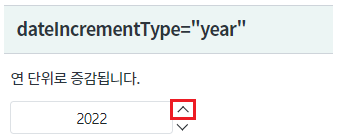
값이 연 단위 1 증가합니다.
[브라우저(Chrome) 실행 예시]
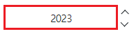
영역 [dateIncrementType="month"]의 Spinner의 증가 버튼을 클릭합니다.
[브라우저(Chrome) 실행 예시]
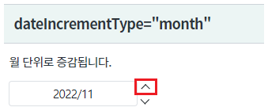
값이 월 단위 1 증가합니다.
[브라우저(Chrome) 실행 예시]
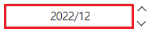
영역 [(기본)dateIncrementType="day"]의 Spinner의 증가 버튼을 클릭합니다.
[브라우저(Chrome) 실행 예시]
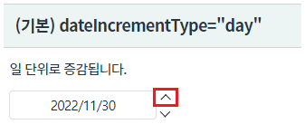
값이 일 단위 1 증가합니다.
[브라우저(Chrome) 실행 예시]
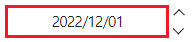
영역 [dateIncrementType="hour"]의 Spinner의 증가 버튼을 클릭합니다.
[브라우저(Chrome) 실행 예시]
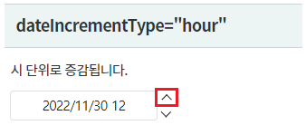
값이 시 단위 1 증가합니다.
[브라우저(Chrome) 실행 예시]
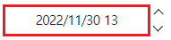
영역 [dateIncrementType="minute"]의 Spinner의 증가 버튼을 클릭합니다.
[브라우저(Chrome) 실행 예시]
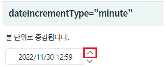
값이 분 단위 1 증가합니다.
[브라우저(Chrome) 실행 예시]
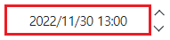
STEP1. 속성을 지정합니다.
[필수] dataType="date" //데이터 타입을 날짜형으로 지정합니다.
[필수] dateIncrementType="year" //증감 단위를 연 단위로 지정합니다.
그림 1.웹스퀘어5 SP5 스튜디오의 Property View(속성창) 예시
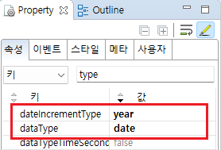
[소스 코드 예시]
<!-- spinner의 소스 본문 예시 --> <w2:spinner dataType="date" dateIncrementType="year" id="spi_exam1"> </w2:spinner>
원하는 시점에 컴포넌트의 초기값을 지정하는 스크립트를 작성합니다.
//예제 파일의 스크립트 "scwin.initPage"에 작성되었습니다. var strDate; //올해 반환 받기 strDate = $p.getCurrentServerDate("yyyy"); //Spinner [spi_exam1]에 값을 올해로 할당합니다. spi_exam1.setValue(strDate);
STEP1. 속성을 지정합니다.
[필수] dataType="date" //데이터 타입을 날짜형으로 지정합니다.
[필수] dateIncrementType="month" //증감 단위를 월 단위로 지정합니다.
그림 2.웹스퀘어5 SP5 스튜디오의 Property View(속성창) 예시
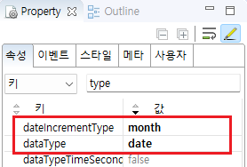
[소스 코드 예시]
<!-- spinner의 소스 본문 예시 --> <w2:spinner dataType="date" dateIncrementType="month" id="spi_exam2"> </w2:spinner>
원하는 시점에 컴포넌트의 초기값을 지정하는 스크립트를 작성합니다.
//예제 파일의 스크립트 "scwin.initPage"에 작성되었습니다. var strDate; //올해 반환 받기 strDate = $p.getCurrentServerDate("yyyy"); //Spinner [spi_exam2]에 값을 올해 11월로 할당합니다. spi_exam2.setValue(strDate+"11");
STEP1. 속성을 지정합니다.
[필수] dataType="date" //데이터 타입을 날짜형으로 지정합니다.
[필수] dateIncrementType="day" //증감 단위를 일 단위로 지정합니다.
그림 3.웹스퀘어5 SP5 스튜디오의 Property View(속성창) 예시
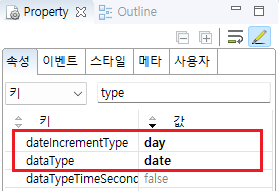
[소스 코드 예시]
<!-- spinner의 소스 본문 예시 --> <w2:spinner dataType="date" dateIncrementType="day" id="spi_exam3"> </w2:spinner>
원하는 시점에 컴포넌트의 초기값을 지정하는 스크립트를 작성합니다.
//예제 파일의 스크립트 "scwin.initPage"에 작성되었습니다. var strDate; //올해 반환 받기 strDate = $p.getCurrentServerDate("yyyy"); //Spinner [spi_exam3]에 값을 올해 11월 30일로 할당합니다. spi_exam3.setValue(strDate+"1130");
STEP1. 속성을 지정합니다.
[필수] dataType="date" //데이터 타입을 날짜형으로 지정합니다.
[필수] dateIncrementType="hour" //증감 단위를 시 단위로 지정합니다.
그림 4.웹스퀘어5 SP5 스튜디오의 Property View(속성창) 예시
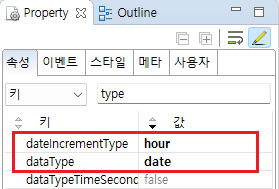
[소스 코드 예시]
<!-- spinner의 소스 본문 예시 --> <w2:spinner dataType="date" dateIncrementType="hour" id="spi_exam4"> </w2:spinner>
원하는 시점에 컴포넌트의 초기값을 지정하는 스크립트를 작성합니다.
//예제 파일의 스크립트 "scwin.initPage"에 작성되었습니다. var strDate; //올해 반환 받기 strDate = $p.getCurrentServerDate("yyyy"); //Spinner [spi_exam4]에 값을 올해 11월 30일 12시로 할당합니다. spi_exam4.setValue(strDate+"113012");
STEP1. 속성을 지정합니다.
[필수] dataType="date" //데이터 타입을 날짜형으로 지정합니다.
[필수] dateIncrementType="minute" //증감 단위를 분 단위로 지정합니다.
그림 5.웹스퀘어5 SP5 스튜디오의 Property View(속성창) 예시
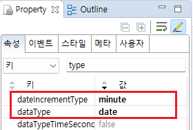
[소스 코드 예시]
<!-- spinner의 소스 본문 예시 --> <w2:spinner dataType="date" dateIncrementType="minute" id="spi_exam5"> </w2:spinner>
원하는 시점에 컴포넌트의 초기값을 지정하는 스크립트를 작성합니다.
//예제 파일의 스크립트 "scwin.initPage"에 작성되었습니다. var strDate; //올해 반환 받기 strDate = $p.getCurrentServerDate("yyyy"); //Spinner [spi_exam5]에 값을 "올해 11월 30일 12시 59분"으로 할당합니다. spi_exam5.setValue(strDate+"11301259");
dataType
dateIncrementType
dataTypeTimeSecond
[웹스퀘어5 SP5 개발 가이드] Spinner
링크 : https://docs1.inswave.com/sp5_user_guide/8df43d1f59fab704#42ddf8532ad343b6
[웹스퀘어5 SP5 개발 가이드] Spinner 날짜 증가 단위
링크 : https://docs1.inswave.com/sp5_user_guide/8df43d1f59fab704#e9e67ba58ebb3553
Spinner 날짜 증가 단위
링크 : https://youtu.be/JSEHOpyEmP4
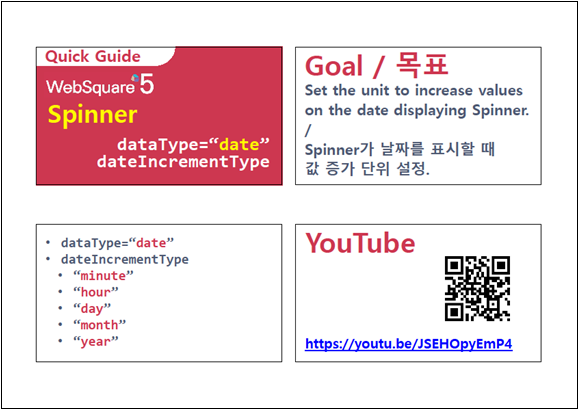